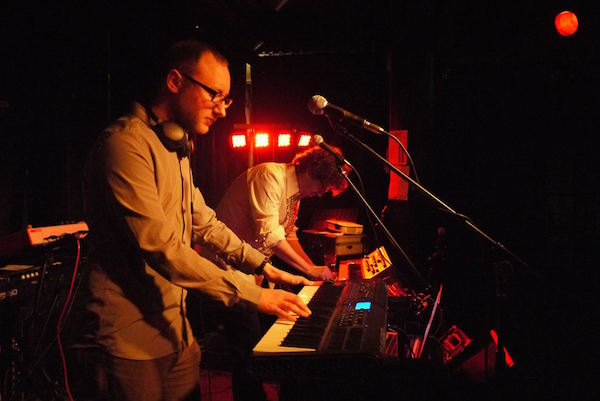
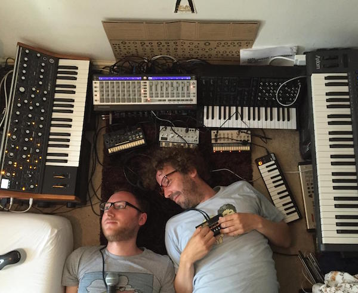
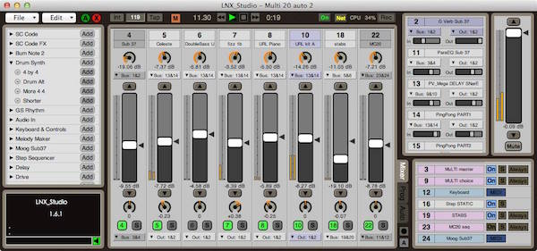
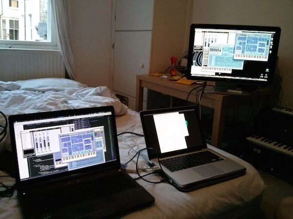
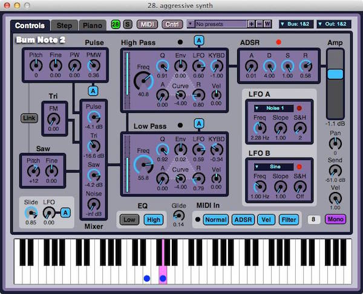
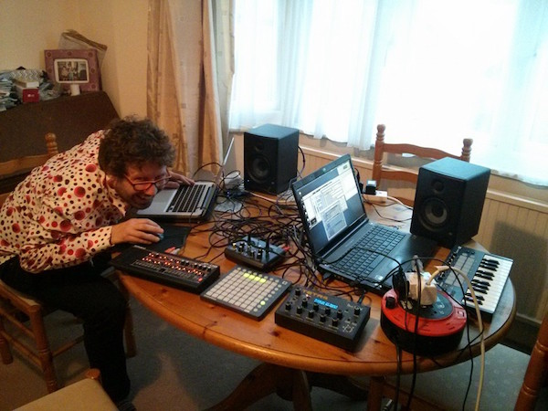

LMP Asks #18: Andrew Lambert & Neil Cosgrove
This month we interviewed Andrew Lambert and Neil Cosgrove, members of Lorenz Attraction and developers of LNX_Studio, a cross platform, customizable, networked DAW written in the SuperCollider programming language. Please see the end of the article for links to LNX_Studio and Lorenz Attraction's music!

Scott: Hi Neil, hi Andy, thank you very much for taking the time to talk with us today. Could we just begin by having you tell us a little bit about yourselves, where you are and what you do?
Neil: I live in Brighton in the UK, so does Andy. I've been using SuperCollider since version 1 came out which is somewhere like 20 years ago or so. I remember being shown version one many, many years ago and as soon as I saw it I was hooked. Andrew and I also make music together in a band called Lorenz Attraction.
Andy: At the moment I'm doing a PhD in computer music and am an avid user of Linux and use Linux for pretty much everything. Neil and I met at a SuperCollider symposium in 2012 in London. We were both giving talks on different topics and realized that we both lived in Brighton and we've been collaborating ever since.
Scott: Andy where are you studying right now?
Andy: My university is called City University London. And I'm looking into generative music, generative rhythm.
Scott: Neil do you have an area that you specialize in?
Neil: I guess super collider really, because I've been using it for so long, but I'm quite good with sound design. And I love a lot of old Analog Kit.

Scott: Totally, I saw a picture of you guys laying down amongst a bunch of electronic instruments that I would give my left leg for.
Andy: Yeah, that's our synth love nest.
Scott: can you tell me about LNX_Studio, if there's something particularly interesting about it, and some of the history?
Neil: It's my second or third attempt at writing a big audio application, the ones in the past have just been way too complicated, too many buttons, too many features so I got to a point about eight years ago when I chucked everything away and started with a clean slate. To do something the size of LNX takes a lot of time, so it's not something that just appeared out of nowhere, once you get two or three ideas it just sort of starts cascading and you suddenly have a to-do list that's a thousand items long and you have to ask yourself what you want to achieve. The networking side of it is probably its biggest feature. It's only recently begun to take shape as a really decent application from being in the band with Andy for the last year doing the Lorenz Attraction stuff because that really focused us on trying to make it something that we want to use and that's going to be useful for making complete tracks and at the same time is powerful and fun to use.
Andy: When we started working together in a live situation, Neil is on a Mac and I'm on Linux and there wasn't a way for us to use the laptops together. That's when I started to work on the Linux version of LNX. Originally I thought maybe we would do an LNX lite version which basically does the initial handshaking and some synchronization stuff, but then we thought well let's go for the fully-fledged Linux support and Windows support to follow.

Scott: Is LNX always networked when you work with it live? Can you describe a workflow of what using LNX live entails?
Neil: We mostly use the networking feature when we're writing tracks and rehearsing together. So let's say you're working on a track and you both want to do something in the DAW, one of you wants to edit a piano roll, one of you wants to edit a drum track you're stuck if you only have one computer, but with two computers one for each of you it makes that process really quick and easy. When we play live we just use the one computer because the audio gets duplicated on both so there's no real need to have two computers. Then we just have our Synths plugged in and all running into LNX.
Scott: You say you can both edit the project at the same time, can you describe that for us a little bit?
Neil: Basically when you run and synchronize the two computers together everything is mirrored so every slider movement every button press every note gets added to a piano roll everything is mirrored on all the computers in the collaboration. So it's like having the song in the DAW on every computer
Andy: One machine is designated the host and that's the one that invites the other people into the collaboration. When one of the client instances of LNX adds a note, let's say, it would first tell the host over the network and that note is then propagated out to everyone else.
Scott: So when you are performing live you have one computer as the sound source and your electronic instruments plugged into that computer?
Andy: That's basically to make it a lot simpler when we do a live set, we want as little to go wrong as possible. In that case, we treat LNX Studio as a master sequencer for our instruments. Saying that, we recently performed a gig with both Mac and Linux laptops and everything worked really well.

Scott: Whenever one talks about electronic or computer music one of the things that gets mentioned a lot is the DAW, or digital audio workstation, and all DAWS basically do the same thing. What seems to really set LNX apart are the networking capabilities, the ability for two or more people to create and edit parameters at the same time in real time.
Neil: there are a couple of other things that set LNX Studio aside as well, and one of those things is that you can design and create your own instruments and effects with SuperCollider code. There's an instrument called SC Code and one called SC Code FX. Essentially, you can open these instruments and in the tabs is the SuperCollider code that describes the SynthDef that defines the synthesizer and you can edit that code in real-time and design your own instruments.
Andy: Including creating the user interface for it (your coded instrument.) Whatever parameters you have in your synth you can make a knob or slider on your screen as a GUI, MIDI learn that to any MIDI equipment connected to your laptop or over the network, even in a different country. So you have many amazing opportunities for live coding and collaboration.
Scott: This is amazing! It really sounds like a next generation DAW that invites collaboration and next-level interaction with SC Code, because if you know how to code SuperCollider then LNX becomes an extension of your language with the ability to add a ton of features that add levels of convenience, timing and syncing, etc. So who would you say the target audience for LNX_Studio? Who can pick it up and start making music with it?
Andy: Anyone! Anyone can do it, because you don't need to know anything about SuperCollider. It's an entirely stand-alone application you can download and run and use the synths that we include in the library without even realizing that it is using SuperCollider on the back end. The SC part is really just for building the synth instruments or effects, so if you have a basic understanding of a signal processing chain, say in Max or Pure Data, and you understand the signal flow of oscillators to filters, reverb, etc, a processing chain of one UGen to another, that's the part that we expose in LNX. So if you didn't know anything about SC, but wanted to learn that sort of stuff through LNX, you would only be learning a small part of SC, but possibly the most exciting and rewarding part which is making the sounds and effects without having to worry about the sequencing which is all done by the GUI.

Scott: You mentioned there are two built-in modules called SC Code and SC Code FX that you can use to build your own instruments and effects, including GUIs. Can you save these instruments?
Neil: Yup! There's a library where you can just click "add to library" after you edit any code!
Scott: How about if I pick an instrument that already exists in LNX, can I find the code and see exactly how the instrument was made?
Andy: With any of the instruments or effects we have made and included with LNX you can just click on the "code" tab and it's right there. You can see straight away how we made them and we're always adding more online and you get a notification when there's a new one, download it and check it out.
Scott: Is there a way to share instruments?
Andy: For now you can share instruments in two ways. If you start a collaboration and add the instrument, then it will pop up on all the other users screens and they can save it to their libraries. You can also just open your library folder and share the files via email or whatever. This is something we're thinking about improving for the next version. We would love to start an online community where you could share library instruments, songs or samples. It's something we are definitely thinking about for the future.
Neil: One of the features we have in LNX is a web browser, so let's say you go into the drum machine looking for say a bass drum, you can download a sample straight from the browser into the drum machine. So we are thinking about, why does it just have to be samples? It could also be instruments, songs, all sorts of things. So part of the future might be a web page that has all of this in one place, accessible all from within LNX.

Scott: Well that cascades nicely into my next question which is what are your plans for LNX?
Neil: the biggest one that people request right now is the ability to record audio and then loop it. The reason why we haven't approached it just yet is when it comes to the networking side it's pretty straightforward to send UDP messages around saying to "do this now, do this now", but when you have large amounts of audio you really increase the bandwidth requirements.
Andy: One of the solutions we are thinking of actually ties into the last thing we were talking about which is the community website. If one user uploads a sound to that website then everyone else can download it from the website and it doesn't interfere with the peer-to-peer communications. Another big thing for the future is Windows support. My main role is in cross-platform compatibility. Neil programs on Mac, I port it over to Linux, but it's basically just little tweaks because SuperCollider is cross-platform. So technically, the Windows version should be straightforward once we have the Linux version out the door.
Neil: It's finding substitutes for OS commands like "curl", "convert", dealing with sound files, etc -- the stuff that's not SuperCollider that we have to find solutions for.
Scott: Is there anything you would like to add that I haven't asked about?
Andy: SC Code and FX are just two of many instruments included with LNX. There's a granular-sample drum machine with a sequencer (GS Rhythm), a virtual analog instrument (Bum Note 2), an analog drum machine (Drum Synth) and more.
Neil: The other things we haven't covered are probably programs, presets and automation. Drum patterns, synth settings, everything can be saved as a preset. You can then build those into programs that can be triggered by launchpad, etc. Any parameter changes, including changing programs, can be recorded into automation. So it's very easy to produce complete tracks -- it's not just for live performance.
Links
Neil: https://soundcloud.com/neil_cosgrove/tracks
Andy: http://andyroid.co.uk
Lorenz Attraction SoundCloud: https://soundcloud.com/lorenz-attraction
Lorenz Attraction Facebook: https://www.facebook.com/LorenzAttraction/?fref=ts
LNX_Studio (Mac): http://lnxstudio.sourceforge.net
LNX_Studio (Source code and Linux alpha): https://github.com/neilcosgrove/LNX_Studio
LNX_Studio Demo: https://www.youtube.com/watch?v=mt7gTyoFsj8